Xem mọi hồ sơ chưa đóng theo ngày khởi hành, việc cần xử lý và người phụ trách; thấy ngay Booking tạo hồ sơ lỗi.
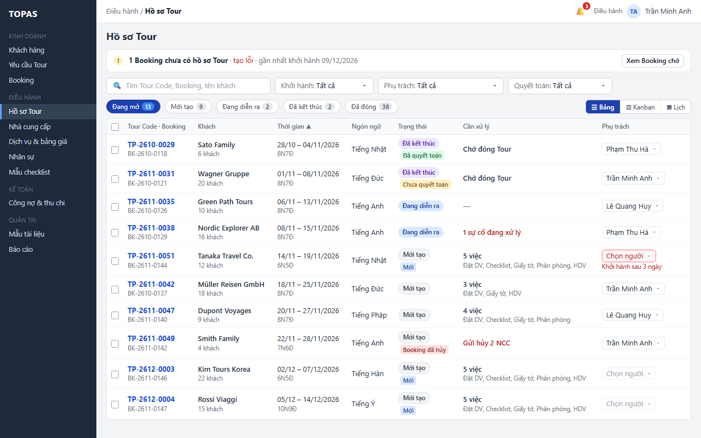
Điều hành nhận tin hồ sơ được tạo tự động khi Booking được lưu, hoặc sắp khởi hành mà chưa có người phụ trách; bấm để mở DH07 với bộ lọc phù hợp.
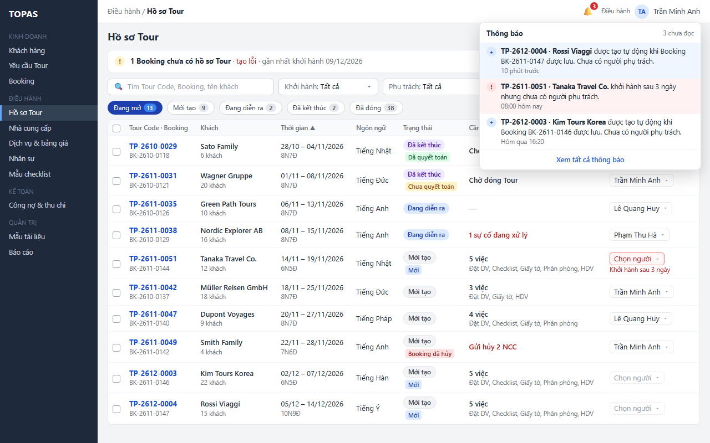
Gom các hồ sơ cần giao; ô Chọn người viền nét đứt, viền đỏ khi sắp khởi hành.
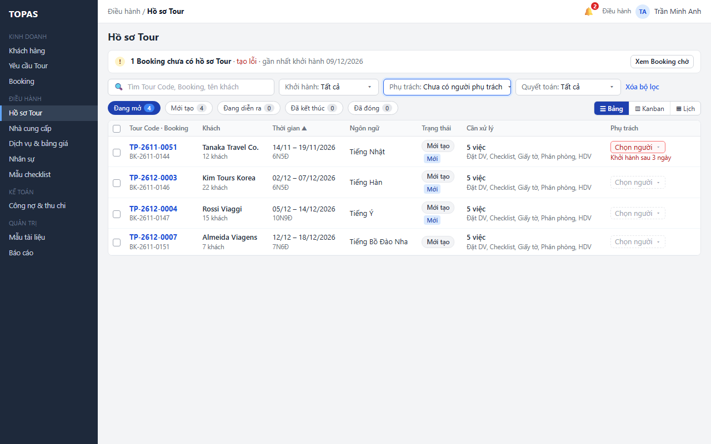
Chọn người ngay trên dòng; danh sách xếp người khớp ngôn ngữ phục vụ trước, rồi người ít hồ sơ đang mở.
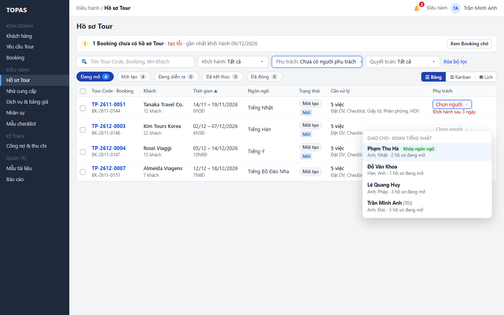
Lưu ngay khi chọn; dòng ra khỏi bộ lọc và thông báo có liên kết Xem dòng.
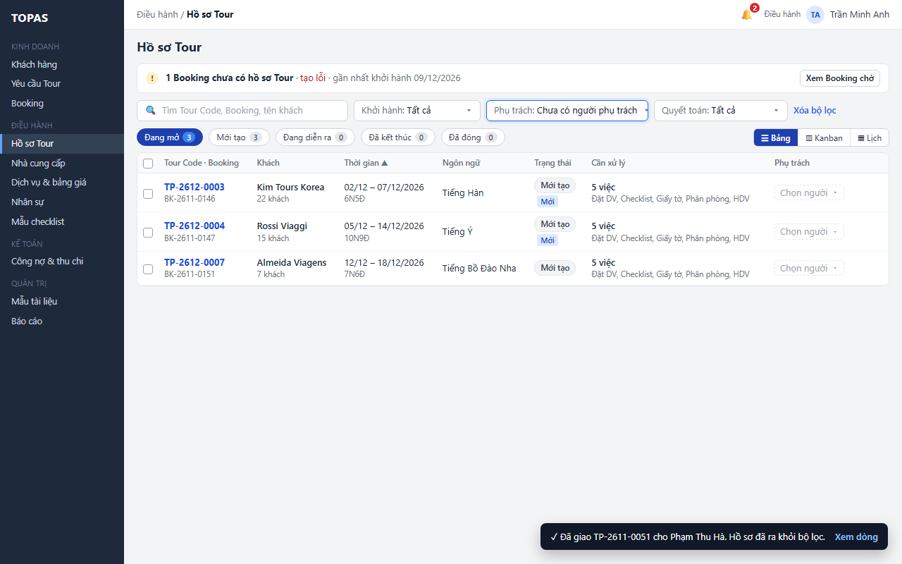
Thanh hàng loạt thay cho ô trên dòng; chọn người rồi Áp dụng một lần.
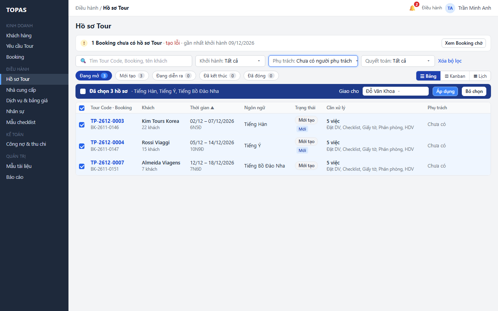
Báo số hồ sơ đã giao và hồ sơ bị bỏ qua kèm lý do; bộ lọc rỗng thì hiện trạng thái đã xong.
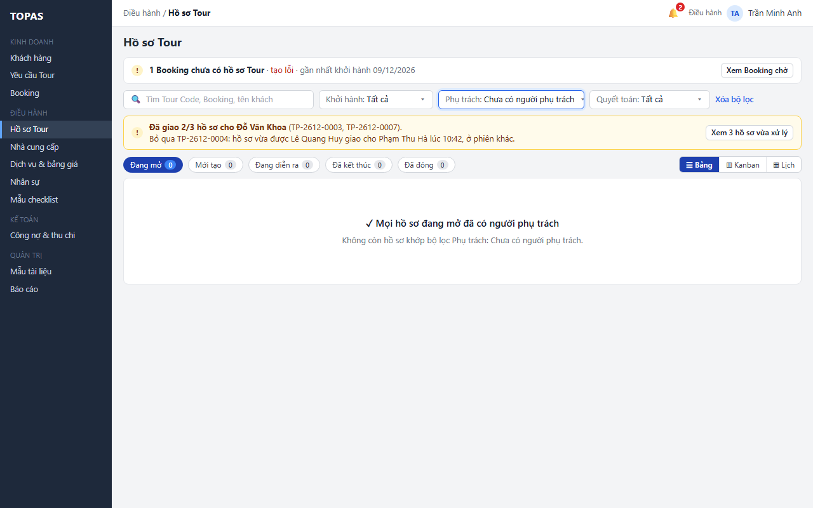
Theo dõi Booking tạo hồ sơ lỗi sau 3 lần tự thử lại; Thử lại ngay trên dòng. Số đã thu chỉ để tham khảo.
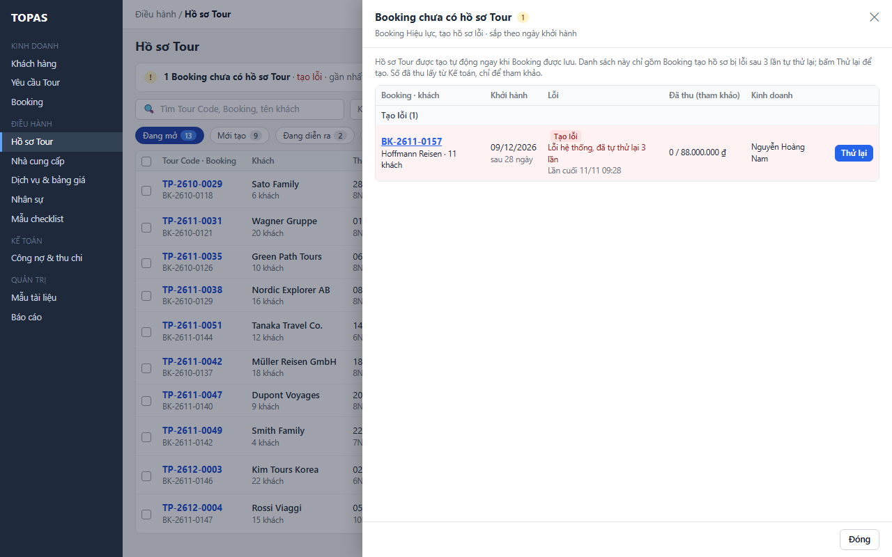
Lọc hồ sơ Đã kết thúc để vào quyết toán; bấm dòng mở thẳng DH08.8.
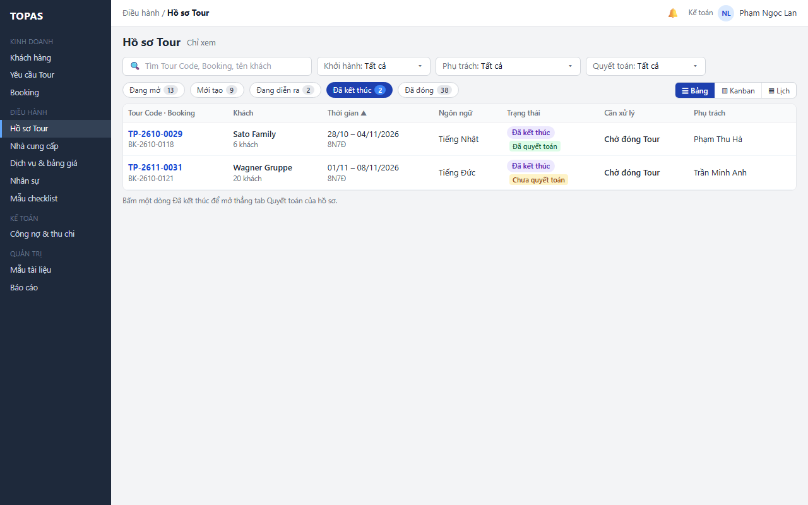
Chỉ đọc; chỉ thấy hồ sơ của Booking mình phụ trách, biết đã có người điều hành hay chưa.
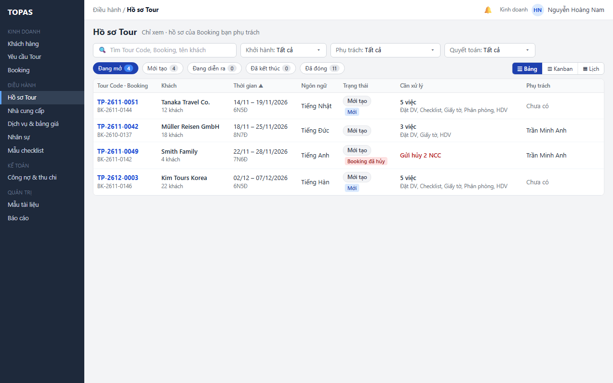
Phân biệt không khớp bộ lọc với chưa có dữ liệu; nhắc kiểm tra mục Booking chờ.
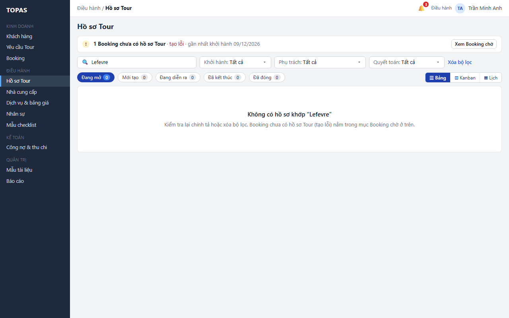
Giữ bộ lọc và cho thử lại khi không tải được dữ liệu.
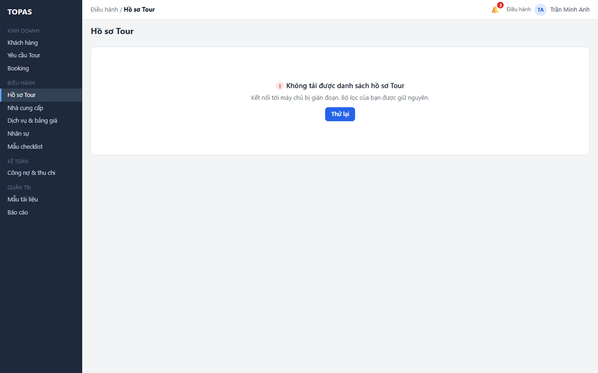
Bốn cột theo trạng thái hồ sơ thay cho hàng chip; Đã đóng thu gọn. Thẻ có Tour Code, khách, thời gian, ngôn ngữ, chỉ báo, Cần xử lý và ô Phụ trách. Không kéo thả; bấm thẻ mở DH08.
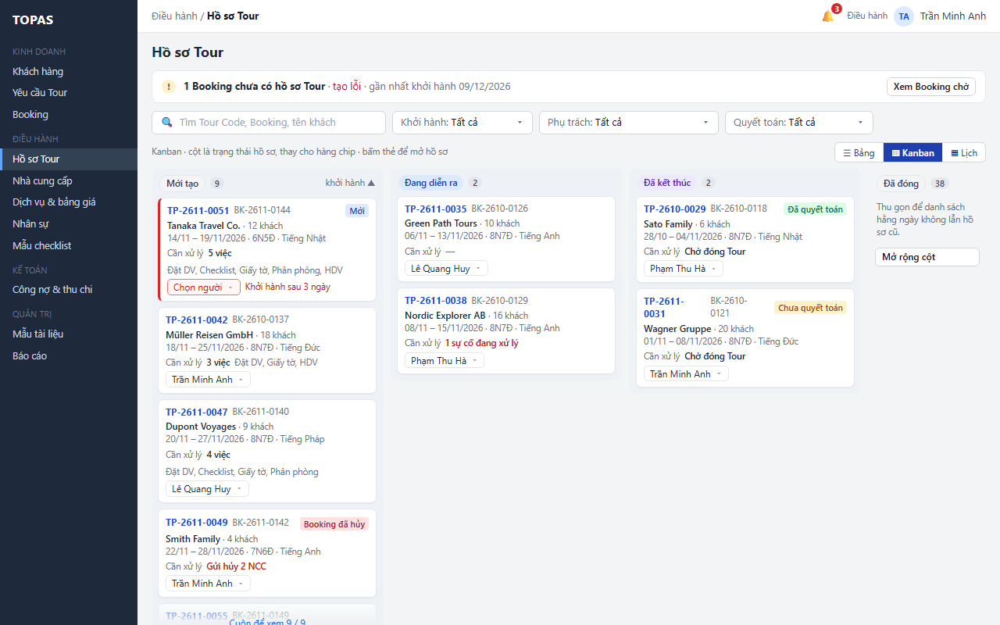
Ô Chọn người trên thẻ dùng chung quy tắc với ô trên dòng: người khớp ngôn ngữ lên trước, lưu ngay khi chọn.
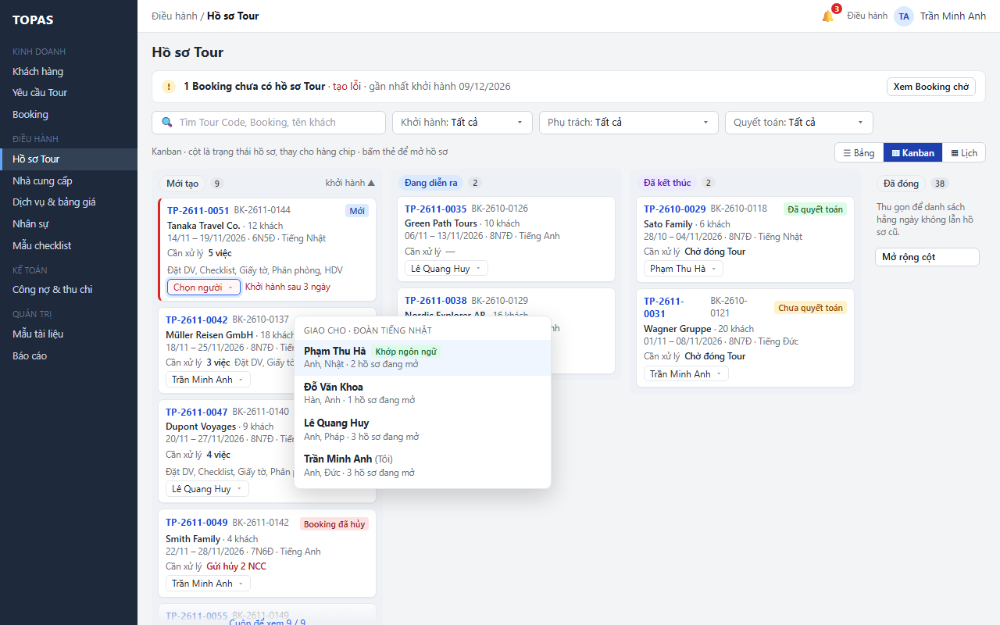
Mỗi hàng là một người phụ trách, hàng Chưa có người phụ trách ở trên cùng; thấy ngay ai đang nhiều hồ sơ, hồ sơ nào chồng ngày và hồ sơ sắp khởi hành chưa giao.
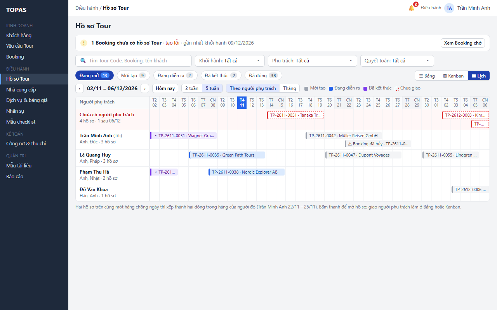
Kinh doanh và Kế toán mặc định xem Lịch tháng; mỗi hồ sơ là một thanh từ ngày khởi hành đến ngày kết thúc, màu theo trạng thái. Chỉ xem.
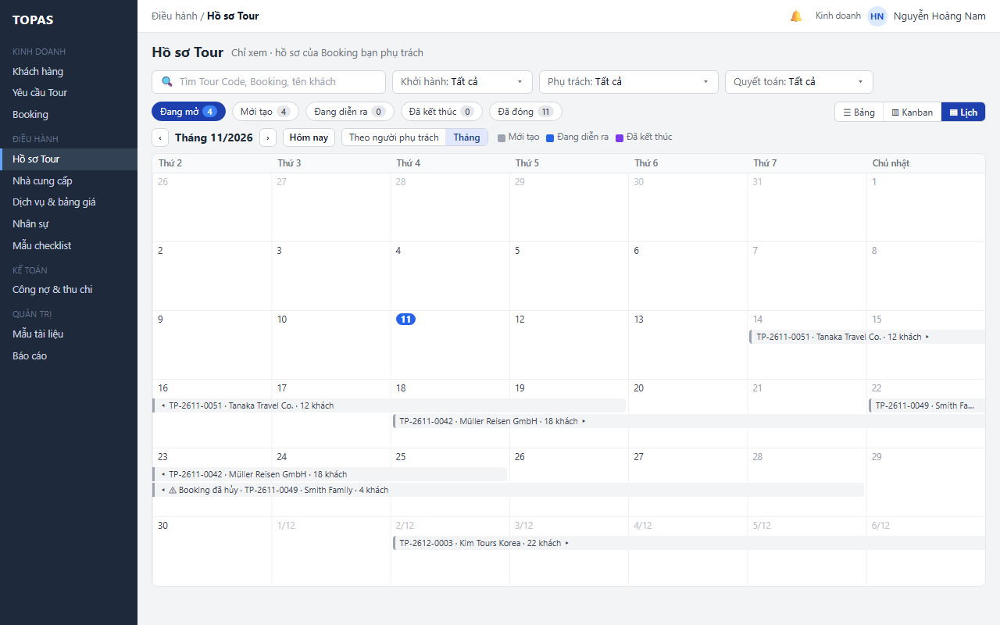